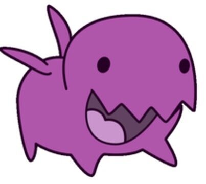

스타크래프트 세계의 미래를 바꿔놓을 칼날여왕 케리건의 탄생과 프로토스의 고향 아이어의 함락 등 거대한 사건들이 일어나기 때문에 상당히 중요한 에피소드이다. 물론 침략자인 초월체 입장에서 진행되기 때문에 브루드워 저그 캠페인과 마찬가지로 암울한 내용이 주를 이룬다. 특히나 마지막 미션을 깨고 나서 나오는 폐허가 된 아이어의 시네마틱은 상당한 찝찝함을 나타낸다.
저그 미션의 특징은 동족전은 오로지 단 1번 뿐이며, 테란은 4번 나머지 5번은 프로토스만을 상대한다. 테란을 상대하 는 까닭은 거의 다 케리건 때문이다. 기지가 없는 실내 미션인 5번째를 제외하면 마지막으로 싸우는게 4번미션인만큼 최종테크 테란 유닛들을 상대할 일이 거의 없고 5번째 미션에서 나오는 고스트들 몇몇 상대하는 게 전부다. 물론 1번만 싸우는 저그는 최종테크까지 다 간 상태에서 상대하지만.
추가로 테란전은 적 제거가 목표이지만, 프로 토스전은 특정 지점 이동 등의 재미난 임무가 목표다. 각각 테란전과 프로토스전 방어 미션이 하나씩 있다